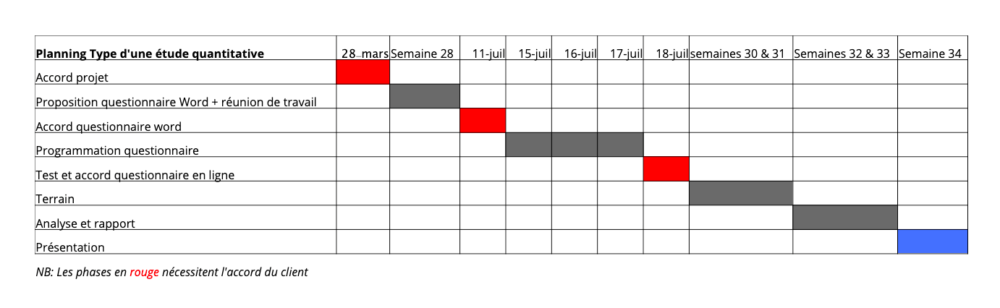

📊 Activité 1 : Exprimez clairement votre besoin : le brief
Réalisez une étude de marché — Partie 1
Cours en ligne
Un espace centralisé pour suivre le cours, ouvrir les activités, consulter les exercices, organiser les groupes et déposer les livrables.
Informations générales
Objectifs d’apprentissage
Matériel nécessaire
Déroulement du cours
Le data marketing et le web analytics ont modifié en profondeur la pratique des études de marché et de la connaissance client. Malgré ces révolutions, l’adéquation entre une offre et son marché, ou Product Market Fit, semble parfois encore plus difficile à définir et à partager.
Comment anticiper les besoins de vos prospects et clients ?
Comment convaincre de la pertinence du Product Market Fit identifié ?
Nous allons voir ensemble comment répondre à ces questions pas à pas, et de manière simple.
Activités à faire
Réalisez une étude de marché — Partie 1
Comprendre la démarche complète d’une étude de marché.
Présenter des résultats fiables, lisibles et convaincants.
Activité 1 — Contenu de cours
💡 Tirez le maximum de ce cours
Dans ce chapitre, vous allez apprendre à utiliser le brief pour bien lancer un projet d’étude. Le brief, que l’on appelle aussi cahier des charges, constitue la base de votre étude.
Que vous réalisiez vous-même le travail ou que vous le sous-traitiez, le brief sert de document de référence. À l’origine d’une étude réussie, il y a toujours un brief clair.
Décrire le contexte business et marketing de départ.
Préciser ce que l’étude doit permettre de comprendre ou de décider.
Identifier les actions concrètes qui découleront des résultats.
Prévoir les étapes, les délais, les validations et les contraintes.
Anticiper les difficultés, le budget, les cibles et les attentes internes.
La première chose à faire pour préparer une étude, c’est un constat business et marketing. Il sert à décrire concrètement le but du projet, en l’ancrant dans la réalité de l’entreprise et du marché.

Exemple : votre shampoing Biolessan
Par exemple, vous êtes analyste marché pour la marque de cosmétique bio Biolessan. Votre constat préalable doit expliquer le contexte du marché, la logique du lancement, le positionnement de l’entreprise et les enjeux stratégiques.
Pour maximiser les chances de succès de l’étude, les objectifs doivent être définis avec précision. Un objectif comme “améliorer la connaissance des acheteurs potentiels” reste trop vague.
Dans le cas du shampoing, on peut décliner l’objectif en deux points :
Le brief doit montrer l’intérêt opérationnel de l’étude. Il faut préciser les décisions à prendre et les actions qui découleront des résultats.
La date de disponibilité des résultats est un critère déterminant. Elle peut influencer la méthode, la taille de l’échantillon, le mode d’interrogation et le prestataire.

Exemple de planning type d’une étude quantitative
Un rétroplanning permet de vérifier la faisabilité du projet et de repérer les étapes de validation. Certaines phases nécessitent l’accord du client avant de continuer.
De nombreux facteurs peuvent avoir un impact sur l’étude : budget, délais, pays concernés, traduction des documents, difficulté de recrutement ou attentes internes.
Une fois le brief posé, il faut choisir la méthodologie adaptée. Il peut exister plusieurs manières de répondre à une même problématique.
Si vous cherchez à comprendre en profondeur les motivations, une approche qualitative peut être adaptée. Si vous cherchez à mesurer, comparer ou hiérarchiser, une approche quantitative sera souvent plus pertinente.
Comprendre, explorer, illustrer, exprimer.
Mesurer, comparer, hiérarchiser, valider statistiquement.
Les études qualitatives reposent sur une approche ouverte. Elles permettent de comprendre les perceptions, les motivations profondes et la manière dont les répondants s’expriment.
Le focus group réunit plusieurs personnes sous la conduite d’un animateur. L’objectif est de créer un échange collectif afin de faire émerger des idées, des réactions et des pistes d’amélioration.

Exemple : un focus group
L’entretien individuel consiste à interroger une personne en face-à-face. Cette méthode est utile pour traiter des sujets confidentiels, sensibles ou nécessitant une parole plus libre.

Exemple : un entretien individuel
L’entretien peut aussi être réalisé à distance, notamment lorsque les participants ne peuvent pas se déplacer ou lorsqu’ils sont dispersés géographiquement.

Exemple : entretien à distance
Les études quantitatives permettent de mesurer des comportements, des préférences ou des intentions auprès d’un échantillon plus large.

Exemple de calcul d’une taille minimum d’échantillon
La taille de l’échantillon dépend notamment du taux de pénétration de la cible et du nombre minimum de répondants nécessaires pour obtenir une analyse exploitable.
Un questionnaire peut contenir des questions de fréquentation, d’intention d’achat ou d’évaluation sur une échelle d’accord.

Exemple : question sur les habitudes d’achat

Exemple : échelle d’accord sur l’utilisation des shampoings
Une étude de marché peut également s’appuyer sur des benchmarks, des données de cadrage, des problématiques marketing courantes et des éléments d’anticipation.

Points clés pour structurer l’étude
Certaines études utilisent des visuels, produits, publicités ou offres promotionnelles pour tester les réactions des consommateurs.

Exemple de support à tester auprès des consommateurs
À retenir
Le brief est le point de départ de l’étude de marché. Il permet de clarifier le besoin, de définir les objectifs, de cadrer les décisions attendues, de choisir la bonne méthode et de planifier le projet.
Activité 2
Une étude de marché suit une démarche structurée. Elle part d’un besoin d’information, puis passe par la collecte, l’analyse et la formulation de recommandations.
Activité 1 — Exercice
💡 Objectif de l’exercice
Vous devez vérifier votre capacité à préparer un projet d’étude de marché, à comprendre le rôle du brief et à choisir les bonnes approches méthodologiques.
Vous venez de présenter les résultats du test de packaging de votre nouveau shampoing à l’équipe dirigeante. Le score de la meilleure proposition de packaging est de 21 % d’intention d’achat certaine et 36 % d’intention d’achat probable. Votre directeur financier vous demande si ce résultat est bon.
Attention, plusieurs réponses sont possibles.
Attention, plusieurs réponses sont possibles.
Votre directeur marketing a assisté à une conférence internationale où une présentation mettait en valeur des résultats issus d’un bulletin board. Il vous demande s’il serait intéressant de tester le futur packaging de votre nouveau shampoing avec cette approche méthodologique.
Attention, plusieurs réponses sont possibles.
Vous préparez le test de packaging de votre futur shampoing. Le chef de produit souhaiterait connaître les résultats spécifiquement sur les acheteurs d’une marque concurrente.
Attention, plusieurs réponses sont possibles.
L’équipe communication souhaite organiser des focus groups avec des acheteurs de shampoing dans les circuits bio pour mieux cerner leurs motivations d’achat. Le chef de produit n’est pas d’accord, car une étude similaire a déjà été menée il y a 18 mois. Il préfère garder son budget pour une étude quantitative prospective sur les cosmétiques bio.
Attention, plusieurs réponses sont possibles.
Attention, plusieurs réponses sont possibles.
Attention, plusieurs réponses sont possibles.
Attention, plusieurs réponses sont possibles.
Consigne de dépôt
Après avoir traité l’exercice, préparez votre réponse dans un document partagé, puis transmettez le lien dans la page “Répartition groupe et dépôt 1”.
Activité 2
Construisez la méthodologie de votre étude.
Activité 2
| Groupe | Membres | Méthode choisie | Lien du dépôt | Statut |
|---|---|---|---|---|
| Groupe 1 | À compléter | À compléter | À compléter | En attente |
| Groupe 2 | À compléter | À compléter | À compléter | En attente |
Activité 3
Une étude de marché doit être crédible. Les résultats doivent être appuyés par des données, des sources fiables et une interprétation claire.
Activité 3
Préparez une synthèse crédible de vos résultats.
Activité 3
| Groupe | Membres | Résultat attendu | Lien du dépôt | Statut |
|---|---|---|---|---|
| Groupe 1 | À compléter | Synthèse des résultats | À compléter | En attente |
| Groupe 2 | À compléter | Synthèse des résultats | À compléter | En attente |
Gestion
Cet espace est réservé à l’administrateur. Il permettra de gérer les activités, les contenus, les exercices, les groupes, les dépôts et les élèves.
Activités
Groupes
Dépôts
| Activité | Groupe | Dépôt | Statut | Feedback |
|---|---|---|---|---|
| Activité 1 | Groupe 1 | À compléter | En attente | À corriger |